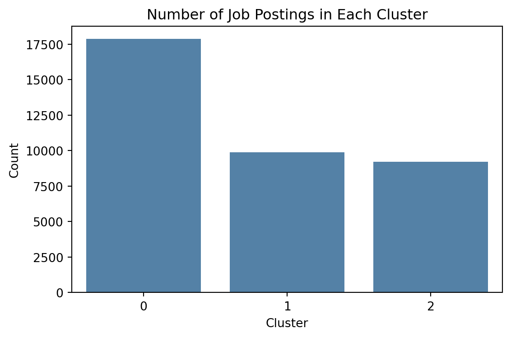
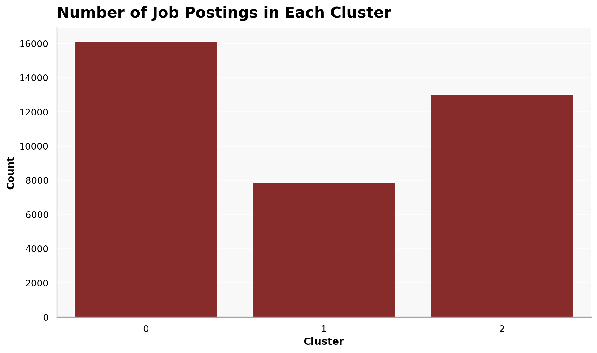

from pyspark.sql import SparkSession
# Start a Spark session
spark = SparkSession.builder.config("spark.driver.host", "localhost").appName("JobPostingsAnalysis").getOrCreate()
spark.catalog.clearCache()
# Load the CSV file into a Spark DataFrame
df = spark.read.option("header", "true").option("inferSchema", "true").option(
"multiLine", "true").option("escape", "\"").csv("./data/clean_job_postings.csv")
# Register the DataFrame as a temporary SQL view
df.createOrReplaceTempView("clean_job_postings")
# Show Schema and Sample Data
#print("---This is Diagnostic check, No need to print it in the final doc---")
# comment the lines below when rendering the submission
#df.printSchema()
#df.show(5)Predictive Modeling
Using machine learning methods to predict job growth trends.
Filtering and Feature Selection
from pyspark.sql import functions as F
topic_keywords = [
"data scientist",
"data analyst",
"business analyst",
"business intelligence",
"machine learning",
"analytics"
]
condition = None
for kw in topic_keywords:
current_condition = F.lower(F.col("SPECIALIZED_OCCUPATION")).contains(kw)
condition = current_condition if condition is None else (condition | current_condition)
df_analysis = df.filter(F.col("SALARY").isNotNull()) \
.filter(F.col("SPECIALIZED_OCCUPATION").isNotNull()) \
.filter(condition)
df_analysis.select("SPECIALIZED_OCCUPATION", "SALARY").show(10, truncate=False)
print("Filtered row count:", df_analysis.count())+----------------------+--------+
|SPECIALIZED_OCCUPATION|SALARY |
+----------------------+--------+
|Data Analyst |115024.0|
|Data Analyst |115024.0|
|Data Analyst |110155.0|
|Data Analyst |115024.0|
|Data Analyst |115024.0|
|Data Analyst |92962.0 |
|Data Analyst |107645.0|
|Data Analyst |115024.0|
|Data Analyst |115024.0|
|Data Analyst |115024.0|
+----------------------+--------+
only showing top 10 rowsFiltered row count: 36952Feature Engineering
skill_features = [
"Python (Programming Language)",
"SQL (Programming Language)",
"Microsoft Excel",
"Data Analysis",
"Machine Learning",
"Power BI",
"Tableau (Business Intelligence Software)",
"Communication"
]
df_analysis = df_analysis.withColumn(
"ALL_SKILLS_TEXT",
F.concat_ws(
" ",
F.coalesce(F.col("SOFTWARE_SKILLS_NAME"), F.lit("")),
F.coalesce(F.col("SPECIALIZED_SKILLS_NAME"), F.lit("")),
F.coalesce(F.col("COMMON_SKILLS_NAME"), F.lit(""))
)
)
for skill in skill_features:
safe_name = skill.replace(" ", "_") \
.replace("(", "") \
.replace(")", "") \
.replace("/", "_") \
.replace("-", "_")
df_analysis = df_analysis.withColumn(
safe_name,
F.when(F.col("ALL_SKILLS_TEXT").contains(skill), 1).otherwise(0)
)
df_analysis.select(
"SALARY",
"Python_Programming_Language",
"SQL_Programming_Language",
"Microsoft_Excel",
"Data_Analysis",
"Machine_Learning",
"Power_BI",
"Tableau_Business_Intelligence_Software",
"Communication"
).show(5, truncate=False)+--------+---------------------------+------------------------+---------------+-------------+----------------+--------+--------------------------------------+-------------+
|SALARY |Python_Programming_Language|SQL_Programming_Language|Microsoft_Excel|Data_Analysis|Machine_Learning|Power_BI|Tableau_Business_Intelligence_Software|Communication|
+--------+---------------------------+------------------------+---------------+-------------+----------------+--------+--------------------------------------+-------------+
|115024.0|0 |0 |0 |1 |0 |0 |0 |1 |
|115024.0|0 |0 |0 |0 |0 |0 |0 |0 |
|110155.0|1 |0 |0 |1 |0 |1 |1 |0 |
|115024.0|0 |0 |0 |1 |0 |0 |0 |0 |
|115024.0|0 |0 |0 |1 |0 |0 |0 |1 |
+--------+---------------------------+------------------------+---------------+-------------+----------------+--------+--------------------------------------+-------------+
only showing top 5 rowsdf_analysis = df_analysis.withColumn(
"MIN_YEARS_EXPERIENCE_NUM",
F.when(
F.col("MIN_YEARS_EXPERIENCE").rlike("^[0-9]+(\\.[0-9]+)?$"),
F.col("MIN_YEARS_EXPERIENCE").cast("double")
).otherwise(0.0)
)
df_analysis = df_analysis.fillna({
"REMOTE_TYPE_NAME": "Not Listed",
"MIN_EDULEVELS_NAME": "Not Listed"
})
df_analysis.select(
"MIN_YEARS_EXPERIENCE",
"MIN_YEARS_EXPERIENCE_NUM",
"REMOTE_TYPE_NAME",
"MIN_EDULEVELS_NAME"
).show(10, truncate=False)+--------------------+------------------------+----------------+-------------------+
|MIN_YEARS_EXPERIENCE|MIN_YEARS_EXPERIENCE_NUM|REMOTE_TYPE_NAME|MIN_EDULEVELS_NAME |
+--------------------+------------------------+----------------+-------------------+
|5 |5.0 |[None] |Bachelor's degree |
|3 |3.0 |[None] |No Education Listed|
|0 |0.0 |Remote |Bachelor's degree |
|0 |0.0 |[None] |Bachelor's degree |
|5 |5.0 |[None] |Bachelor's degree |
|2 |2.0 |[None] |Bachelor's degree |
|10 |10.0 |Not Remote |High school or GED |
|2 |2.0 |[None] |No Education Listed|
|0 |0.0 |[None] |Bachelor's degree |
|5 |5.0 |Remote |Associate degree |
+--------------------+------------------------+----------------+-------------------+
only showing top 10 rowsVariable Selection
continuous_cols = [
"MIN_YEARS_EXPERIENCE_NUM",
"Python_Programming_Language",
"SQL_Programming_Language",
"Microsoft_Excel",
"Data_Analysis",
"Machine_Learning",
"Power_BI",
"Tableau_Business_Intelligence_Software",
"Communication"
]
categorical_cols = [
"REMOTE_TYPE_NAME",
"SPECIALIZED_OCCUPATION"
]
target_col = "SALARY"
df_final = df_analysis.select(continuous_cols + categorical_cols + [target_col])
df_final = df_final.dropna(subset=continuous_cols + categorical_cols + [target_col])
df_final.show(5, truncate=False)+------------------------+---------------------------+------------------------+---------------+-------------+----------------+--------+--------------------------------------+-------------+----------------+----------------------+--------+
|MIN_YEARS_EXPERIENCE_NUM|Python_Programming_Language|SQL_Programming_Language|Microsoft_Excel|Data_Analysis|Machine_Learning|Power_BI|Tableau_Business_Intelligence_Software|Communication|REMOTE_TYPE_NAME|SPECIALIZED_OCCUPATION|SALARY |
+------------------------+---------------------------+------------------------+---------------+-------------+----------------+--------+--------------------------------------+-------------+----------------+----------------------+--------+
|5.0 |0 |0 |0 |1 |0 |0 |0 |1 |[None] |Data Analyst |115024.0|
|3.0 |0 |0 |0 |0 |0 |0 |0 |0 |[None] |Data Analyst |115024.0|
|0.0 |1 |0 |0 |1 |0 |1 |1 |0 |Remote |Data Analyst |110155.0|
|0.0 |0 |0 |0 |1 |0 |0 |0 |0 |[None] |Data Analyst |115024.0|
|5.0 |0 |0 |0 |1 |0 |0 |0 |1 |[None] |Data Analyst |115024.0|
+------------------------+---------------------------+------------------------+---------------+-------------+----------------+--------+--------------------------------------+-------------+----------------+----------------------+--------+
only showing top 5 rowsString Indexing and One-Hot Encoding
from pyspark.ml.feature import StringIndexer, OneHotEncoder, VectorAssembler
from pyspark.ml import Pipeline
indexers = [
StringIndexer(inputCol=col, outputCol=f"{col}_idx", handleInvalid="skip")
for col in categorical_cols
]
encoders = [
OneHotEncoder(inputCol=f"{col}_idx", outputCol=f"{col}_vec", dropLast=True)
for col in categorical_cols
]
assembler = VectorAssembler(
inputCols=continuous_cols + [f"{col}_vec" for col in categorical_cols],
outputCol="features"
)
pipeline = Pipeline(stages=indexers + encoders + [assembler])
data = pipeline.fit(df_final).transform(df_final)
ml_ready = data.select("SALARY", "features")
ml_ready.show(5, truncate=False)+--------+----------------------------------------------+
|SALARY |features |
+--------+----------------------------------------------+
|115024.0|(15,[0,4,8,9,12],[5.0,1.0,1.0,1.0,1.0]) |
|115024.0|(15,[0,9,12],[3.0,1.0,1.0]) |
|110155.0|(15,[1,4,6,7,10,12],[1.0,1.0,1.0,1.0,1.0,1.0])|
|115024.0|(15,[4,9,12],[1.0,1.0,1.0]) |
|115024.0|(15,[0,4,8,9,12],[5.0,1.0,1.0,1.0,1.0]) |
+--------+----------------------------------------------+
only showing top 5 rowsTrain-Test Split
train_df, test_df = ml_ready.randomSplit([0.8, 0.2], seed=42)
print(f"Dimensions of full data: ({ml_ready.count()}, {len(ml_ready.columns)})")
print(f"Dimensions of training data: ({train_df.count()}, {len(train_df.columns)})")
print(f"Dimensions of test data: ({test_df.count()}, {len(test_df.columns)})")Dimensions of full data: (36952, 2)Dimensions of training data: (29575, 2)Dimensions of test data: (7377, 2)Models
Linear Regression Model
from pyspark.ml.regression import LinearRegression
from pyspark.ml.evaluation import RegressionEvaluator
lr = LinearRegression(
featuresCol="features",
labelCol="SALARY",
predictionCol="prediction",
solver="normal",
regParam=0.0,
elasticNetParam=0.0
)
lr_model = lr.fit(train_df)
predictions = lr_model.transform(test_df)
predictions.select("SALARY", "prediction").show(10, truncate=False)+-------+------------------+
|SALARY |prediction |
+-------+------------------+
|22880.0|96149.77804106617 |
|24544.0|99654.87629592454 |
|24960.0|96149.77804106617 |
|27300.0|103962.5972239317 |
|29120.0|93821.65766634361 |
|30888.0|106091.81024584032|
|31200.0|95695.37730048102 |
|31200.0|93821.65766634361 |
|31366.0|106091.81024584032|
|31387.0|93821.65766634361 |
+-------+------------------+
only showing top 10 rowsr2 = RegressionEvaluator(
labelCol="SALARY",
predictionCol="prediction",
metricName="r2"
).evaluate(predictions)
rmse = RegressionEvaluator(
labelCol="SALARY",
predictionCol="prediction",
metricName="rmse"
).evaluate(predictions)
mae = RegressionEvaluator(
labelCol="SALARY",
predictionCol="prediction",
metricName="mae"
).evaluate(predictions)
print("Intercept:", lr_model.intercept)
print("Coefficients:", lr_model.coefficients)
print("R-squared:", r2)
print("RMSE:", rmse)
print("MAE:", mae)Intercept: 90278.34310698419
Coefficients: [2328.1203747225513,6342.129333845935,2106.6035533022314,-8267.219923450675,-2129.213021908618,4211.363762035877,-2744.309366130598,-2009.0316593807174,1176.9778801358116,3543.314559359427,3001.2019532801214,2140.2795988706775,11093.17469936089,11626.112745078583,11879.890849620446]
R-squared: 0.10146085518488546
RMSE: 25464.593599660526
MAE: 17206.66857252054num_features = lr_model.coefficients.size
feature_names = continuous_cols.copy()
remaining_features = num_features - len(feature_names)
for i in range(remaining_features):
feature_names.append(f"encoded_category_{i}")
print("Length of features:", len(feature_names))
print("Length of coefs:", lr_model.coefficients.size)Length of features: 15
Length of coefs: 15summary = lr_model.summary
coefficients = list(lr_model.coefficients.toArray())
standard_errors = list(summary.coefficientStandardErrors)
t_values = list(summary.tValues)
p_values = list(summary.pValues)
feature_names_with_intercept = feature_names + ["intercept"]
coefficients_with_intercept = coefficients + [lr_model.intercept]
print("Length of features:", len(feature_names_with_intercept))
print("Length of coefs:", len(coefficients_with_intercept))
print("Length of se:", len(standard_errors))
print("Length of tvals:", len(t_values))
print("Length of p vals:", len(p_values))Length of features: 16
Length of coefs: 16
Length of se: 16
Length of tvals: 16
Length of p vals: 16rows = []
for i in range(len(feature_names_with_intercept)):
rows.append((
feature_names_with_intercept[i],
float(coefficients_with_intercept[i]),
float(standard_errors[i]),
float(t_values[i]),
float(p_values[i])
))
coef_table = spark.createDataFrame(
rows,
["Feature", "Estimate", "Std Error", "t-stat", "P-Value"]
)
coef_table_pd = coef_table.toPandas()
coef_table_pd| Feature | Estimate | Std Error | t-stat | P-Value | |
|---|---|---|---|---|---|
| 0 | MIN_YEARS_EXPERIENCE_NUM | 2328.120375 | 52.811653 | 44.083460 | 0.000000e+00 |
| 1 | Python_Programming_Language | 6342.129334 | 386.352494 | 16.415396 | 0.000000e+00 |
| 2 | SQL_Programming_Language | 2106.603553 | 357.925005 | 5.885600 | 4.008859e-09 |
| 3 | Microsoft_Excel | -8267.219923 | 342.152878 | -24.162357 | 0.000000e+00 |
| 4 | Data_Analysis | -2129.213022 | 369.709324 | -5.759154 | 8.537334e-09 |
| 5 | Machine_Learning | 4211.363762 | 557.048342 | 7.560141 | 4.152234e-14 |
| 6 | Power_BI | -2744.309366 | 378.645018 | -7.247710 | 4.343192e-13 |
| 7 | Tableau_Business_Intelligence_Software | -2009.031659 | 376.243546 | -5.339711 | 9.378153e-08 |
| 8 | Communication | 1176.977880 | 305.833400 | 3.848428 | 1.191280e-04 |
| 9 | encoded_category_0 | 3543.314559 | 1081.218262 | 3.277150 | 1.049815e-03 |
| 10 | encoded_category_1 | 3001.201953 | 1122.784557 | 2.672999 | 7.521775e-03 |
| 11 | encoded_category_2 | 2140.279599 | 1333.172708 | 1.605403 | 1.084158e-01 |
| 12 | encoded_category_3 | 11093.174699 | 897.509691 | 12.359950 | 0.000000e+00 |
| 13 | encoded_category_4 | 11626.112745 | 949.657144 | 12.242432 | 0.000000e+00 |
| 14 | encoded_category_5 | 11879.890850 | 1001.470517 | 11.862447 | 0.000000e+00 |
| 15 | intercept | 90278.343107 | 1358.874873 | 66.436097 | 0.000000e+00 |
Random Forest Regression Model
from pyspark.ml.regression import RandomForestRegressor
rf = RandomForestRegressor(
featuresCol="features",
labelCol="SALARY",
predictionCol="prediction_rf",
numTrees=200,
maxDepth=8,
seed=42
)
rf_model = rf.fit(train_df)
rf_predictions = rf_model.transform(test_df)
rf_predictions.select("SALARY", "prediction_rf").show(10, truncate=False)+-------+------------------+
|SALARY |prediction_rf |
+-------+------------------+
|22880.0|100250.50204373815|
|24544.0|100048.19449181056|
|24960.0|100250.50204373815|
|27300.0|106617.93003599257|
|29120.0|102828.8785119679 |
|30888.0|106524.76892254264|
|31200.0|99798.18405907882 |
|31200.0|102828.8785119679 |
|31366.0|106524.76892254264|
|31387.0|102828.8785119679 |
+-------+------------------+
only showing top 10 rowsr2_rf = RegressionEvaluator(
labelCol="SALARY",
predictionCol="prediction_rf",
metricName="r2"
).evaluate(rf_predictions)
rmse_rf = RegressionEvaluator(
labelCol="SALARY",
predictionCol="prediction_rf",
metricName="rmse"
).evaluate(rf_predictions)
mae_rf = RegressionEvaluator(
labelCol="SALARY",
predictionCol="prediction_rf",
metricName="mae"
).evaluate(rf_predictions)
print("Random Forest Regression R-squared:", r2_rf)
print("Random Forest Regression RMSE:", rmse_rf)
print("Random Forest Regression MAE:", mae_rf)Random Forest Regression R-squared: 0.21431856030563667
Random Forest Regression RMSE: 23811.759936142
Random Forest Regression MAE: 15992.33114848107num_rf_features = rf_model.featureImportances.size
rf_feature_names = continuous_cols.copy()
remaining_rf_features = num_rf_features - len(rf_feature_names)
for i in range(remaining_rf_features):
rf_feature_names.append(f"encoded_category_{i}")
print("Length of feature names:", len(rf_feature_names))
print("Length of importances:", rf_model.featureImportances.size)Length of feature names: 15
Length of importances: 15import pandas as pd
rf_importances = list(rf_model.featureImportances.toArray())
rf_importance_df = pd.DataFrame({
"Feature": rf_feature_names,
"Importance": rf_importances
}).sort_values(by="Importance", ascending=False)
rf_importance_df| Feature | Importance | |
|---|---|---|
| 0 | MIN_YEARS_EXPERIENCE_NUM | 0.459080 |
| 3 | Microsoft_Excel | 0.098205 |
| 1 | Python_Programming_Language | 0.075530 |
| 6 | Power_BI | 0.042805 |
| 2 | SQL_Programming_Language | 0.040990 |
| 10 | encoded_category_1 | 0.040659 |
| 8 | Communication | 0.038326 |
| 7 | Tableau_Business_Intelligence_Software | 0.037499 |
| 4 | Data_Analysis | 0.032122 |
| 5 | Machine_Learning | 0.031958 |
| 9 | encoded_category_0 | 0.030804 |
| 12 | encoded_category_3 | 0.021270 |
| 13 | encoded_category_4 | 0.018183 |
| 14 | encoded_category_5 | 0.016293 |
| 11 | encoded_category_2 | 0.016276 |
import matplotlib.pyplot as plt
import seaborn as sns
top10_rf_clean = rf_importance_df[
~rf_importance_df["Feature"].str.contains("encoded_category")
].head(10)
top10_rf_clean = rf_importance_df[
~rf_importance_df["Feature"].str.contains("encoded_category")
].head(10)
plt.figure(figsize=(10, 6))
sns.barplot(
data=top10_rf_clean,
x="Importance",
y="Feature"
)
plt.title("Top 10 Feature Importances", loc="left")
plt.xlabel("Importance")
plt.ylabel("Feature")
plt.tight_layout()
plt.savefig("images/rf_feature_importance_v2.png", dpi=300)
plt.show()

K-Means Clustering
cluster_features = [
"Python_Programming_Language",
"SQL_Programming_Language",
"Microsoft_Excel",
"Data_Analysis",
"Machine_Learning",
"Power_BI",
"Tableau_Business_Intelligence_Software",
"Communication"
]
df_cluster_ready = df_analysis.select(
"ONET_NAME",
"SPECIALIZED_OCCUPATION",
*cluster_features
).dropna(subset=["ONET_NAME"])
df_cluster_ready.show(5, truncate=False)
print("Rows ready for clustering:", df_cluster_ready.count())+------------------------------+----------------------+---------------------------+------------------------+---------------+-------------+----------------+--------+--------------------------------------+-------------+
|ONET_NAME |SPECIALIZED_OCCUPATION|Python_Programming_Language|SQL_Programming_Language|Microsoft_Excel|Data_Analysis|Machine_Learning|Power_BI|Tableau_Business_Intelligence_Software|Communication|
+------------------------------+----------------------+---------------------------+------------------------+---------------+-------------+----------------+--------+--------------------------------------+-------------+
|Business Intelligence Analysts|Data Analyst |0 |0 |0 |1 |0 |0 |0 |1 |
|Business Intelligence Analysts|Data Analyst |0 |0 |0 |0 |0 |0 |0 |0 |
|Business Intelligence Analysts|Data Analyst |1 |0 |0 |1 |0 |1 |1 |0 |
|Business Intelligence Analysts|Data Analyst |0 |0 |0 |1 |0 |0 |0 |0 |
|Business Intelligence Analysts|Data Analyst |0 |0 |0 |1 |0 |0 |0 |1 |
+------------------------------+----------------------+---------------------------+------------------------+---------------+-------------+----------------+--------+--------------------------------------+-------------+
only showing top 5 rowsRows ready for clustering: 36952from pyspark.ml.feature import VectorAssembler
assembler = VectorAssembler(
inputCols=cluster_features,
outputCol="features"
)
cluster_data = assembler.transform(df_cluster_ready)
cluster_data.select("ONET_NAME", "SPECIALIZED_OCCUPATION", "features").show(5, truncate=False)+------------------------------+----------------------+-------------------------------+
|ONET_NAME |SPECIALIZED_OCCUPATION|features |
+------------------------------+----------------------+-------------------------------+
|Business Intelligence Analysts|Data Analyst |(8,[3,7],[1.0,1.0]) |
|Business Intelligence Analysts|Data Analyst |(8,[],[]) |
|Business Intelligence Analysts|Data Analyst |(8,[0,3,5,6],[1.0,1.0,1.0,1.0])|
|Business Intelligence Analysts|Data Analyst |(8,[3],[1.0]) |
|Business Intelligence Analysts|Data Analyst |(8,[3,7],[1.0,1.0]) |
+------------------------------+----------------------+-------------------------------+
only showing top 5 rowsfrom pyspark.ml.clustering import KMeans
kmeans = KMeans(
featuresCol="features",
predictionCol="cluster",
k=3,
seed=42
)
kmeans_model = kmeans.fit(cluster_data)
cluster_predictions = kmeans_model.transform(cluster_data)
cluster_predictions.select(
"SPECIALIZED_OCCUPATION",
"ONET_NAME",
"cluster"
).show(15, truncate=False)+--------------------------+------------------------------+-------+
|SPECIALIZED_OCCUPATION |ONET_NAME |cluster|
+--------------------------+------------------------------+-------+
|Data Analyst |Business Intelligence Analysts|0 |
|Data Analyst |Business Intelligence Analysts|0 |
|Data Analyst |Business Intelligence Analysts|2 |
|Data Analyst |Business Intelligence Analysts|0 |
|Data Analyst |Business Intelligence Analysts|0 |
|Data Analyst |Business Intelligence Analysts|2 |
|Data Analyst |Business Intelligence Analysts|0 |
|Data Analyst |Business Intelligence Analysts|0 |
|Data Analyst |Business Intelligence Analysts|0 |
|Data Analyst |Business Intelligence Analysts|0 |
|Data Analyst |Business Intelligence Analysts|2 |
|Data Analyst |Business Intelligence Analysts|2 |
|Data Analyst |Business Intelligence Analysts|2 |
|Business Analyst (General)|Business Intelligence Analysts|0 |
|Data Analyst |Business Intelligence Analysts|0 |
+--------------------------+------------------------------+-------+
only showing top 15 rowsfrom pyspark.ml.evaluation import ClusteringEvaluator
evaluator = ClusteringEvaluator(
featuresCol="features",
predictionCol="cluster",
metricName="silhouette"
)
silhouette = evaluator.evaluate(cluster_predictions)
print("Silhouette Score:", silhouette)Silhouette Score: 0.3285887006254086cluster_onet = cluster_predictions.groupBy("cluster", "ONET_NAME") \
.count() \
.orderBy("cluster", F.col("count").desc())
cluster_onet.show(30, truncate=False)+-------+------------------------------+-----+
|cluster|ONET_NAME |count|
+-------+------------------------------+-----+
|0 |Business Intelligence Analysts|16108|
|1 |Business Intelligence Analysts|7848 |
|2 |Business Intelligence Analysts|12996|
+-------+------------------------------+-----+
centers = kmeans_model.clusterCenters()
for i, center in enumerate(centers):
print(f"Cluster {i} center:")
for feature_name, value in zip(cluster_features, center):
print(f" {feature_name}: {round(float(value), 3)}")Cluster 0 center:
Python_Programming_Language: 0.052
SQL_Programming_Language: 0.173
Microsoft_Excel: 0.0
Data_Analysis: 0.559
Machine_Learning: 0.055
Power_BI: 0.064
Tableau_Business_Intelligence_Software: 0.039
Communication: 0.476
Cluster 1 center:
Python_Programming_Language: 0.109
SQL_Programming_Language: 0.397
Microsoft_Excel: 1.0
Data_Analysis: 0.699
Machine_Learning: 0.019
Power_BI: 0.177
Tableau_Business_Intelligence_Software: 0.2
Communication: 0.66
Cluster 2 center:
Python_Programming_Language: 0.688
SQL_Programming_Language: 0.907
Microsoft_Excel: 0.159
Data_Analysis: 0.848
Machine_Learning: 0.162
Power_BI: 0.552
Tableau_Business_Intelligence_Software: 0.662
Communication: 0.641from pyspark.ml.feature import PCA
pca = PCA(k=2, inputCol="features", outputCol="pcaFeatures")
pca_model = pca.fit(cluster_predictions)
pca_result = pca_model.transform(cluster_predictions)
pca_pd = pca_result.select(
"cluster",
"SPECIALIZED_OCCUPATION",
"ONET_NAME",
"pcaFeatures"
).toPandas()
pca_pd["PC1"] = pca_pd["pcaFeatures"].apply(lambda v: float(v[0]))
pca_pd["PC2"] = pca_pd["pcaFeatures"].apply(lambda v: float(v[1]))
pca_pd.head()| cluster | SPECIALIZED_OCCUPATION | ONET_NAME | pcaFeatures | PC1 | PC2 | |
|---|---|---|---|---|---|---|
| 0 | 0 | Data Analyst | Business Intelligence Analysts | [-0.48937864336141523, -0.7933839361369086] | -0.489379 | -0.793384 |
| 1 | 0 | Data Analyst | Business Intelligence Analysts | [0.0, 0.0] | 0.000000 | 0.000000 |
| 2 | 2 | Data Analyst | Business Intelligence Analysts | [-1.5850192065998672, 0.29165277636825093] | -1.585019 | 0.291653 |
| 3 | 0 | Data Analyst | Business Intelligence Analysts | [-0.3239275862319031, 0.09696568009015168] | -0.323928 | 0.096966 |
| 4 | 0 | Data Analyst | Business Intelligence Analysts | [-0.48937864336141523, -0.7933839361369086] | -0.489379 | -0.793384 |
plt.figure(figsize=(10, 7))
sns.scatterplot(
data=pca_pd,
x="PC1",
y="PC2",
hue="cluster",
palette=["#DC1212", "#FA8072", "#8B0000"],
s=70,
alpha=0.65,
)
plt.title("K-Means Clusters Based on Skills",loc="left")
plt.xlabel("Principal Component 1")
plt.ylabel("Principal Component 2")
plt.legend(title="Cluster")
plt.grid(alpha=0.2)
plt.tight_layout()
plt.savefig("./images/kmeans_clusters.png", dpi=300)
plt.show()

cluster_counts_pd = (
cluster_predictions.groupBy("cluster")
.count()
.orderBy("cluster")
.toPandas()
)
plt.figure(figsize=(10, 6))
sns.barplot(data=cluster_counts_pd, x="cluster", y="count")
plt.title("Number of Job Postings in Each Cluster", loc="left")
plt.xlabel("Cluster")
plt.ylabel("Count")
plt.tight_layout()
plt.savefig("./images/cluster_counts.png", dpi=300)
plt.show()